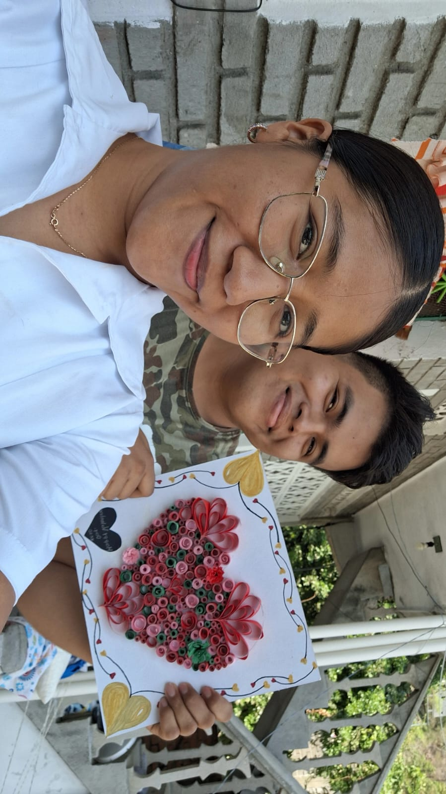

❤️❤️ Un Lunes Inolvidable: La Visita de la Mujer Más Hermosa del Mundo ❤️❤️
Fecha: 21 de febrero de 2025
El pasado lunes 17 de febrero quedó marcado como un día especial e inolvidable. La mujer más hermosa del mundo hizo una visita llena de amor y alegría, convirtiendo un día común en una aventura.
Desde el primer instante, la felicidad se sintió en el aire. Juntos compartimos momentos llenos de risas y complicidad, disfrutando de su compañía de una manera que solo ella sabe hacer especial. Como si fuera poco, preparó un delicioso omelet con el toque perfecto de amor y dedicación, haciendo que cada bocado fuera una experiencia única.
Pero la sorpresa no terminó ahí. Con sus manos llenas de creatividad y cariño, me obsequió una hermosa manualidad hecha por ella misma, un detalle que refleja el inmenso amor que nos une. La imagen de este regalo especial queda como testimonio de su ternura y dedicación.
Sin duda, cada momento a su lado es un regalo que supera cualquier expectativa. Cada vez que la veo, mi corazón se llena de una emoción inexplicable, recordándome lo afortunado que soy de tenerla en mi vida.
Te amo mucho, mujer hermosa. Gracias por tu visita.
Texto: Oliver Doroteo
Fotografia: Lorena Ortega